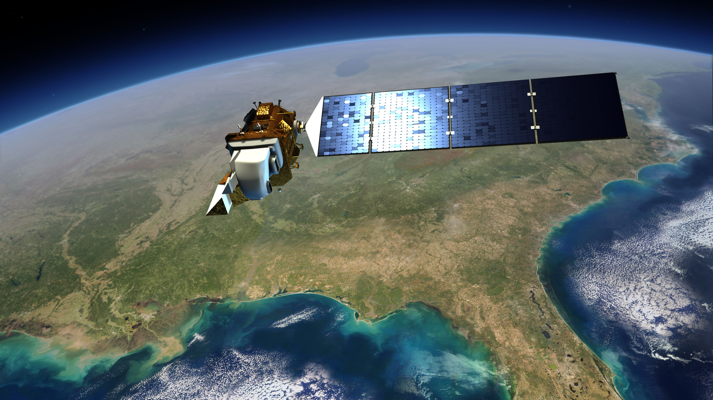
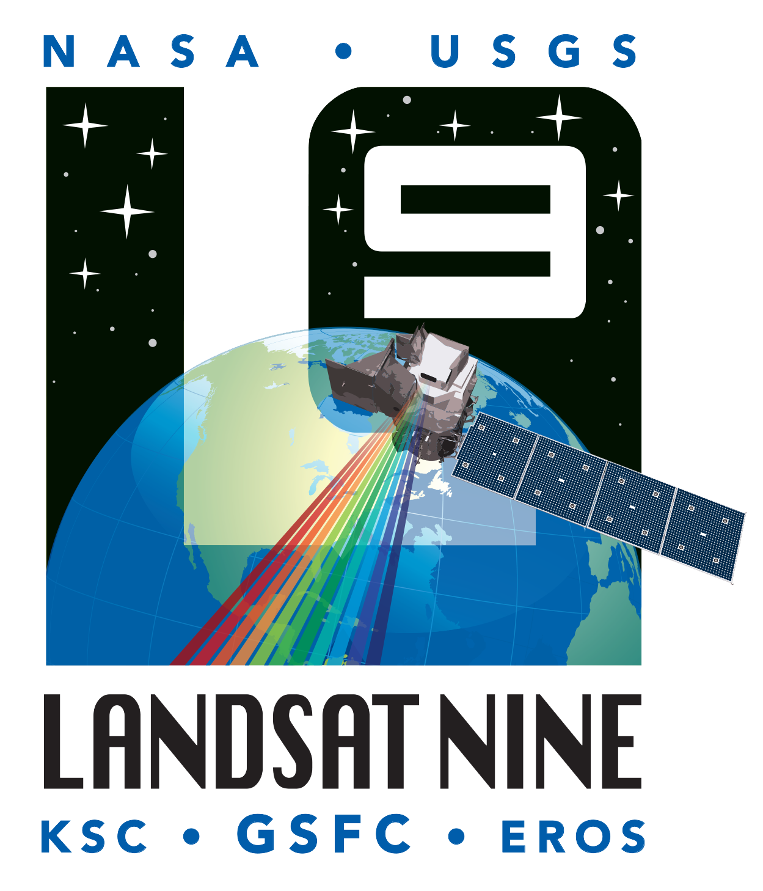
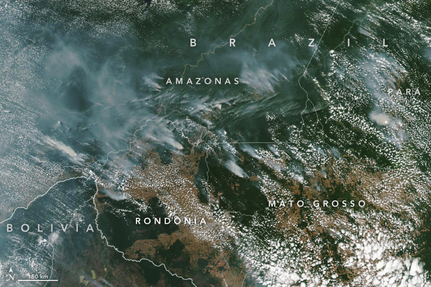
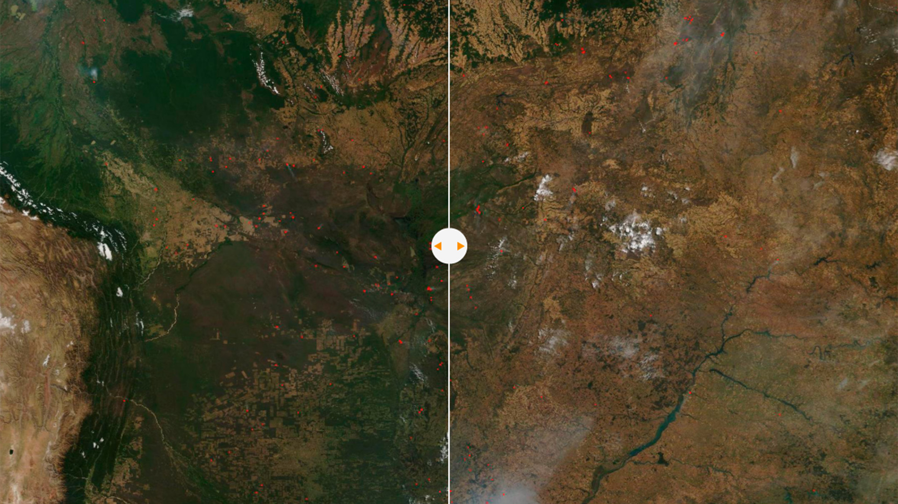
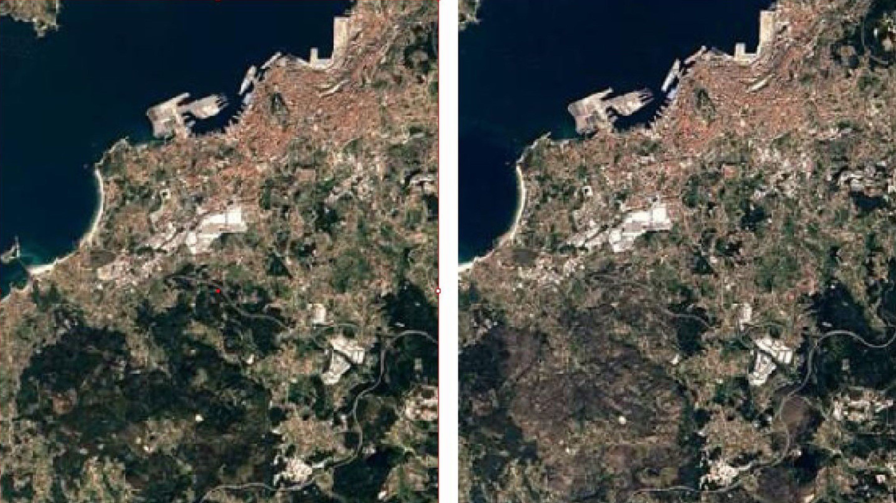
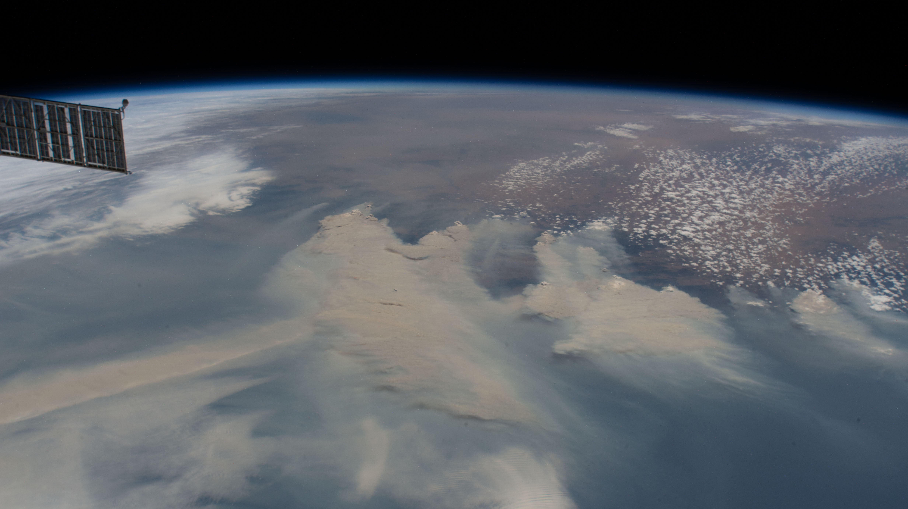
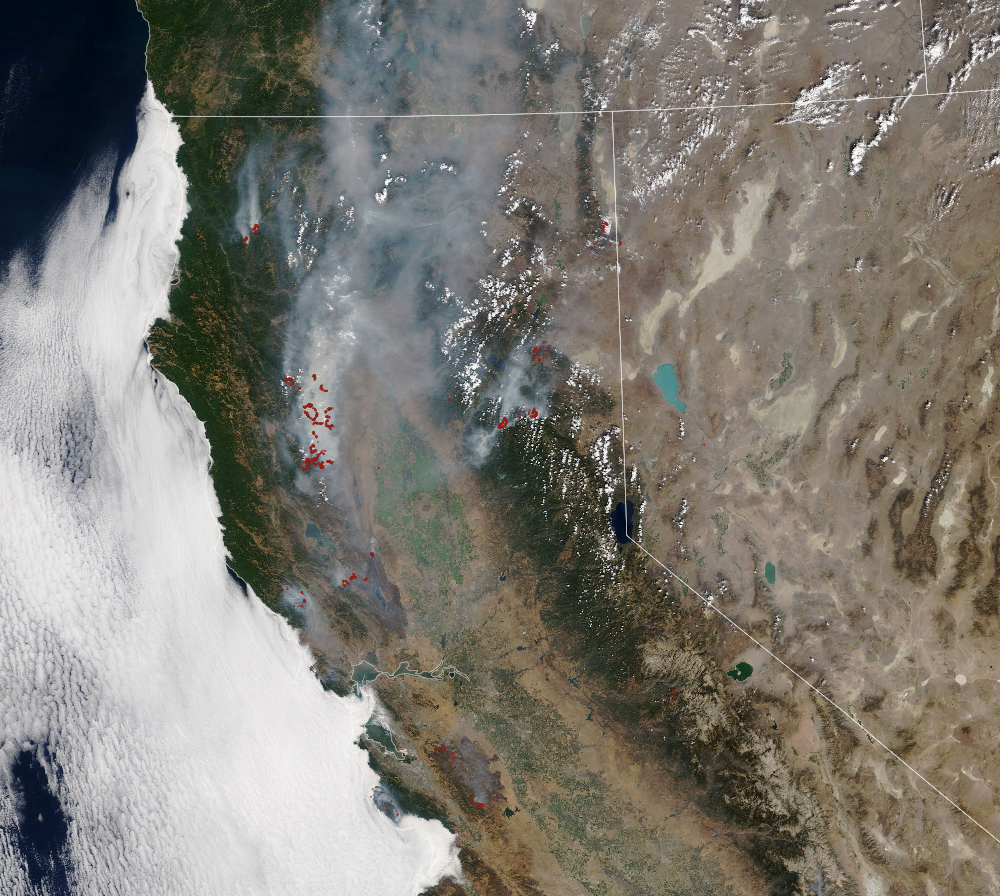

Se necesitan cerca de 22 árboles para dar oxigeno a una persona. La Tierra tiene unos 3 billones de árboles,
o lo que es lo mismo,
430 mil hectáreas de bosques. Más o menos son unos 400 árboles por persona. Pero si continúan los incendios
de gran magnitud, esta
cifra se podría ver mermada con el paso de los años.
La NASA, junto con sus satélites, es una pieza clave en la extinción de incendios y en la localización de
ciertas zonas de riesgo, especialmente en aquellas
en las que hay una gran cantidad de árboles.
En las siguientes líneas le iremos contando como la NASA, junto con su satélite LandSat consigue ser una de
las piezas claves en la extinción de incendios. También
hablaremos sobre algunos de los incendios de mayor relevancia en nuestro planeta de los últimos años, junto
con imágenes tomadas por satélites del antes
y después, para ver como afectaron los incendios en las zonas que vamos a tratar, además de añadir imagenes
del momento del fuego.
Landsat es un programa llevado a cabo por la NASA y la USGS de forma conjunta. Gracias a él, tenemos más
información que nunca
sobre la superficie terrestre lo cual es crucial a la hora de tomar decisiones respecto al manejo de
nuestros recursos más
esenciales y las consecuencias que esto acarrea para el medioambiente.

Un apartado al que los satélites de Landsat han aportado mucha ayuda es al de los incendios forestales, pues
llevan recolectando
datos sobre ellos desde la década de los 70. Gracias a ellos conocemos con más detalle y de forma más rápida
cuándo y dónde hay un
incendio, su extensión y gravedad, los daños producidos al medioambiente y el tiempo y recursos serán
necesarios para repararlos;
como se mencionó antes, una información crucial.
Esta labor es posible, en gran parte, por la tecnología tan potente que tienen. Por ejemplo, su resolución
es enorme
(en un pixel se aglomeran tan solo 30 metros cuadrados de paisaje).
A día de hoy está en órbita el Landsat 8, que fue lanzado el 11 de febrero del 2013 y a día de hoy nos ha
aportado más de 1,6 millones de imágenes,
pero se prevé que para mediados del 2021 se lance el Landsat 9; el cual contará con una mayor capacidad de
almacenamiento y mejoras radiométricas y geométricas.

Los incendios forestales de 2019 en la selva amazónica son una
serie de incendios que han afectado principalmente la región de la amazonia en Brasil, Bolivia y
Perú.
Se sospecha que la principal causa es la deforestación pues en estas zonas de Brasil talan los arboles y
después utilizan el fuego para despejar terrenos que luego se utilizan para ganadería y agricultura.
Por ello, estos incendios son más comunes de lo que pensamos ya que la mayoría se causan por estas
razones.
El estado más afectado, con 13.641 focos, fue el de Mato Grosso, que se extiende por gran parte de la
Amazonía
afectando a unos 2,5 millones de hectáreas.

Impacto económico:
Se calcula que prenderle fuego a un área de 1.000 hectáreas vale cerca de unos 220.000 euros, en el mercado
negro lo
cual puede suponer perdidas de más de 4,3 millones de euros a todo esto hay que sumarle los gastos para
controlar
estos incendios.
Impacto natural:
El impacto natural es bastante grande pues el Amazonas es uno de los pulmones de la tierra que se encarga de
la regulación
del carbono y la mitigación del calentamiento global, con lo cual estos incendios que lo destrozan son un
gran problema para
la humanidad pues puede causar graves problemas de salud.
Duraron aproximadamente desde el 1 de enero de 2019 hasta el 1 de septiembre de ese mismo año.

Los incendios de Galicia del año 2017 fueron uno de los más graves que se recuerdan en lo últimos años.
Comienzaron alrededor del 13 de octubre de 2017 y hasta ese domingo ya había registrados unos 146 focos
activos.
El incendio finalmente terminó con 264 focos
Se consideraron incendios provocados y se llevó a cabo una investigación, uno de los problemas que más
agravaron la situación fue la sequía.
Impacto económico:
En cuanto al impacto en la económía, la Asociación Forestal cifra en 30 millones de euros en pérdidas, 18,9
millones los daños y en otros 10 su recuperación.
Además, ciertos sectores, como el de la madera, asumen ya este año como pérdido, al no poder explotar una
gran cantidad de montes debido a su quema.
Hay que recalcar que la Xunta de Galicia y el Gobierno de España lanzaron una línea de ayudas para así,
amortiguar las grander pérdidas económicas
que un incendio de esta magnitud supone.
Impacto natural:
Se calcula que aproximadamente se calcinaron 49.171 hectáreas y murieron 4 personas.
A parte de la gran extensión que fue quemada, otro de los impactos que tuvo en la naturaleza fue la gran
cantidad de humo que provocaron
los incendios, llegando incluso a la capital británica, Londres, y otras ciudades de Reino Unido, en parte,
debido al huracán Ophelia.

La temporada de incendios de 2019 del continente Oceánico, fueron una serie de incendios que afecto a todo
el país australiano debido a la gran cantidad de familias y animales que puso en peligro. Según afirman
muchos diarios y
residentes australianos, es uno de los peores incendios forestales que se recuerdan, junto con los incendios
forestales de la temporada 1974-75, en la que se quemaron un total de 117 millones de hectáreas.
En este incendio, se quemaron un total de más de 10 millones de hectáreas, unas cifras muy escalofriantes, a
la vez que devastadoras. Como ejemplo, las superficie quemada es el equivalente a la superficie de
Hungría.
En cuanto al origen del incendio, los expertos apuntan a que las principales causas son el calentamiento
global, afectando más de la cuenta en Australia, en parte debido a que el continente oceánico sigue siendo
uno de los que tiene una de
las emisiones de dióxido de carbono per cápita más alta del muno. Esto hace que cada vez tenga unas
temperaturas más altas, que, junto con la escasez de precipitaciones, fueron claves en el origen y extensión
del incendio.

Impacto Económico:
Los sectores australianos de la agricultura y el turismo son los más perjudicados. En el sector agrícola,
son incalculables las pérdidas que tendrán, mientras que en el sector turístico, junto con el sector de
seguros, preveen pérdidas de más de 1000 millones de euros.
Además de estas pérdidas, hay que tener en cuenta que muchas familias se han quedado sin trabajo y han visto
como han merado sus ingresos, hecho que incrementa aún más la emergencia económica.
Impacto Natural:
Si los impactos económicos son devastadores, más lo son los naturales. El hecho de que se quemen más de 10
millones de hectáreas (100000 km2) ya nos dice sobre el impacto que los incendios han tenido sobre la
naturaleza.
En cuanto a temas de infraestructuras, hay que mencionar que más de 2500 edificios fueros derruirnos al ser
alcanzados por la llamas.
Respecto a la especie animal, se estima que más de 1000 millones de animales (sin contar insectos,
necesarios para la supervivencia de los bosques) fallecieron a causa de los incendios. Respecto a los seres
humanos, las cifran son de 173 fallecidos.
Por último, es importante destacar que la duración de los incendios va desde junio de 2019 hasta mayo de
2020.
La temporada de incendios forestales salvajes en California empezó a principios de mayo del año 2020. Hasta
la fecha(2 de Octubre de 2020) se han registrado más de 8000 incendios con un total 4,142,656 hectáreas
quemadas lo que supone un 4% total del estado de California.

Impacto económico:
Más de 50000 personas han tenido que evacuar la zona. Debido a la mala calidad del aire esto ha provocado el
aumento de las visitas al hospital que debido a que estamos en una pandemia mundial ha causado estragos en
los hospitales de alrededor.
Imacto natural
Hasta la fecha, 26 personas han perdido la vida a causa de estos incendios y más de 4000 estructuras han
sido dañadas en los incendios [2: https://www.fire.ca.gov/incidents/ ]. Todavía no se han contenido todos
los incendios, por lo que estos número seguirán aumentando.